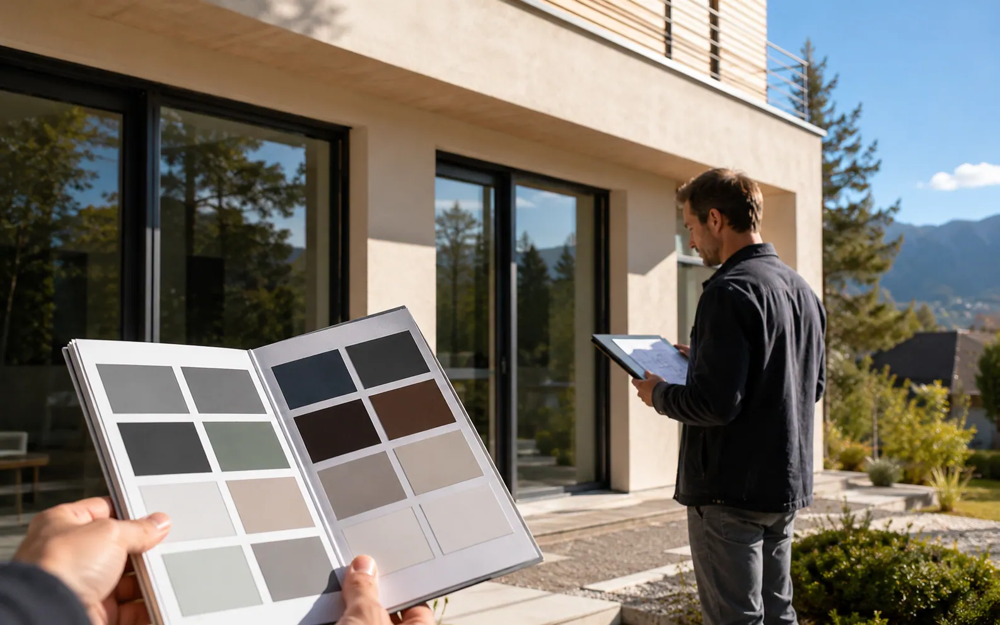

Couleur des menuiseries: comment éviter l'erreur avec le PLU?
RAL, bicoloration, harmonie de façade, copropriété et mairie : les vérifications avant de commander une couleur.
Lire3 min
Pergolas, stores, moustiquaires, portails et protections solaires pour terrasses et accès.

RAL, bicoloration, harmonie de façade, copropriété et mairie : les vérifications avant de commander une couleur.
Orientation, lames, pluie légère, options et autorisations : les points à valider avant de commander une pergola.
Fenêtre, porte-fenêtre, baie coulissante : le comparatif concret pour choisir une moustiquaire selon l’usage, le passage, le prix et les contraintes de pose.
Déclaration préalable, copropriété, PLU : les règles à vérifier avant de modifier une façade ou créer un aménagement extérieur.
Règlement de copropriété, harmonie de façade, assemblée générale et mairie : les bons réflexes avant de poser un store.